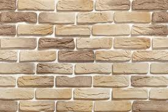
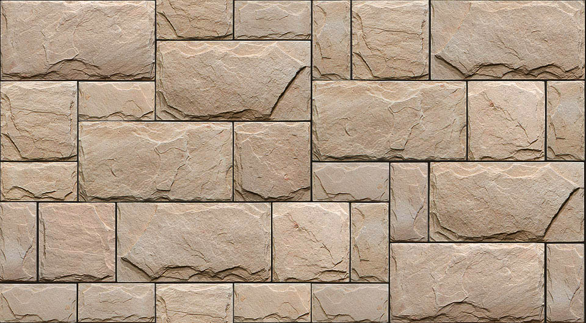

Декоративный кирпич

Чистовая кладка, выполненная декоративным кирпичом
Облицовка декоративным кирпичом — это уникальная возможность придать фасаду или цоколю здания вид чистовой кирпичной кладки.
Декоративный кирпич — это разновидность плитки толщиной 1-2 см. Такая плитка клеится своими руками на ровную поверхность посредством обычного плиточного клея. Среди преимуществ решения отметим низкую стоимость отделки и малую нагрузку на фундамент здания. В сравнении с традиционной кирпичной кладкой.
Важно: не имеет значения, из чего изготовлен данный тип отделочных материалов, внешне его невозможно отличить от настоящего кирпича.
Натуральный или искусственный камень

Отделка экстерьера декоративным камнем — это новая технология, которая популярна и востребована при обустройстве строительных объектов среднего и высшего ценового сегмента.
Применение декоративного камня позволяет сделать дом более устойчивым к негативному воздействию факторов внешней среды. Эти элитные отделочные материалы одинаково хорошо переносят избыточную влажность и длительное воздействие прямых солнечных лучей.
Впрочем, главным преимуществом декоративного камня является его великолепный внешний вид. А так же — разнообразие фактур и цветовых исполнений. Монтаж камня выполняется на заранее оштукатуренную поверхность с применением специального клея.
Поверхность искусственного камня
Совет: учитывая то, что стоимость натурального камня, применяемого при отделке фасадов, велика, можно воспользоваться более доступным в плане стоимости искусственным камнем.